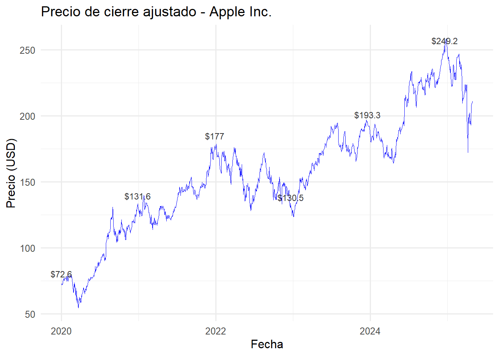
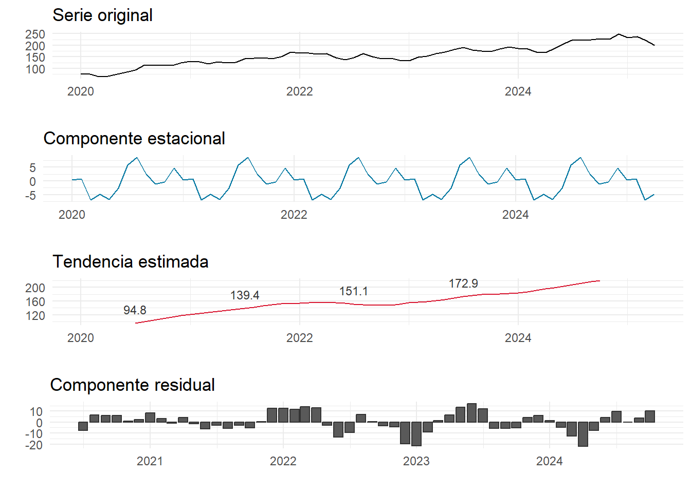

Capitulo2
## Cargando paquete requerido: tidyquant## Registered S3 method overwritten by 'quantmod':
## method from
## as.zoo.data.frame zoo## ── Attaching core tidyquant packages ─────────────────────── tidyquant 1.0.11 ──
## ✔ PerformanceAnalytics 2.0.8 ✔ TTR 0.24.4
## ✔ quantmod 0.4.27 ✔ xts 0.14.1
## ── Conflicts ────────────────────────────────────────── tidyquant_conflicts() ──
## ✖ zoo::as.Date() masks base::as.Date()
## ✖ zoo::as.Date.numeric() masks base::as.Date.numeric()
## ✖ PerformanceAnalytics::legend() masks graphics::legend()
## ✖ quantmod::summary() masks base::summary()
## ℹ Use the conflicted package (<http://conflicted.r-lib.org/>) to force all conflicts to become errorslibrary(tidyquant)
# Descargar datos históricos desde Yahoo Finance
apple_data <- tq_get("AAPL", from = "2020-01-01", to = "2025-04-30")
# Vista previa
head(apple_data)## # A tibble: 6 × 8
## symbol date open high low close volume adjusted
## <chr> <date> <dbl> <dbl> <dbl> <dbl> <dbl> <dbl>
## 1 AAPL 2020-01-02 74.1 75.2 73.8 75.1 135480400 72.7
## 2 AAPL 2020-01-03 74.3 75.1 74.1 74.4 146322800 72.0
## 3 AAPL 2020-01-06 73.4 75.0 73.2 74.9 118387200 72.6
## 4 AAPL 2020-01-07 75.0 75.2 74.4 74.6 108872000 72.2
## 5 AAPL 2020-01-08 74.3 76.1 74.3 75.8 132079200 73.4
## 6 AAPL 2020-01-09 76.8 77.6 76.6 77.4 170108400 75.0library(ggplot2)
library(tidyquant)
# Cargar datos si no están cargados
apple_data <- tq_get("AAPL", from = "2020-01-01", to = "2025-04-30")
apple_data <- na.omit(apple_data)
# Seleccionar solo algunos puntos clave para etiquetar (ej: cada 250 días)
etiquetas <- apple_data[seq(1, nrow(apple_data), by = 250), ]
# Gráfico con línea y etiquetas del mismo color
ggplot(apple_data, aes(x = date, y = adjusted)) +
geom_line(color = "blue", size = 0.3) +
geom_text(
data = etiquetas,
aes(label = paste0("$", round(adjusted, 1))),
color = "gray20", size = 3, vjust = -1
) +
labs(
title = "Precio de cierre ajustado - Apple Inc.",
x = "Fecha",
y = "Precio (USD)"
) +
theme_minimal(base_size = 12)## Warning: Using `size` aesthetic for lines was deprecated in ggplot2 3.4.0.
## ℹ Please use `linewidth` instead.
## This warning is displayed once every 8 hours.
## Call `lifecycle::last_lifecycle_warnings()` to see where this warning was
## generated.
##
## ######################### Warning from 'xts' package ##########################
## # #
## # The dplyr lag() function breaks how base R's lag() function is supposed to #
## # work, which breaks lag(my_xts). Calls to lag(my_xts) that you type or #
## # source() into this session won't work correctly. #
## # #
## # Use stats::lag() to make sure you're not using dplyr::lag(), or you can add #
## # conflictRules('dplyr', exclude = 'lag') to your .Rprofile to stop #
## # dplyr from breaking base R's lag() function. #
## # #
## # Code in packages is not affected. It's protected by R's namespace mechanism #
## # Set `options(xts.warn_dplyr_breaks_lag = FALSE)` to suppress this warning. #
## # #
## #################################################################################
## Adjuntando el paquete: 'dplyr'## The following objects are masked from 'package:xts':
##
## first, last## The following objects are masked from 'package:stats':
##
## filter, lag## The following objects are masked from 'package:base':
##
## intersect, setdiff, setequal, union# Obtener y preparar datos
apple_data <- tq_get("AAPL", from = "2020-01-01", to = "2025-04-30")
apple_data <- na.omit(apple_data)
# Calcular SMA
apple_data <- apple_data %>%
mutate(
SMA20 = SMA(adjusted, n = 20),
SMA50 = SMA(adjusted, n = 50)
)
# Seleccionar puntos cada 100 días para etiquetar
etiquetas <- apple_data[seq(1, nrow(apple_data), by = 100), ]
# Graficar con etiquetas
ggplot(apple_data, aes(x = date)) +
geom_line(aes(y = adjusted), color = "blue", size = 0.4) +
geom_line(aes(y = SMA20), color = "red", size = 0.5, linetype = "dashed") +
geom_line(aes(y = SMA50), color = "green", size = 0.5, linetype = "dotdash") +
# Etiquetas para línea principal (precio ajustado)
geom_text(
data = etiquetas,
aes(x = date, y = adjusted, label = paste0("$", round(adjusted, 1))),
color = "gray20", size = 3, vjust = -1
) +
labs(
title = "Precio ajustado con SMA de 20 y 50 días - Apple Inc.",
x = "Fecha",
y = "Precio (USD)"
) +
theme_minimal()## Warning: Removed 19 rows containing missing values or values outside the scale range
## (`geom_line()`).## Warning: Removed 49 rows containing missing values or values outside the scale range
## (`geom_line()`).
# Rezagos
library(dplyr)
library(ggplot2)
library(tidyquant)
# Obtener datos y preparar
apple_data <- tq_get("AAPL", from = "2020-01-01", to = "2025-04-30")
apple_data <- na.omit(apple_data)
# Calcular rezagos de 1, 7 y 30 días
apple_data <- apple_data %>%
mutate(
lag_1 = lag(adjusted, 1),
lag_7 = lag(adjusted, 7),
lag_30 = lag(adjusted, 30)
)
# Filtrar datos válidos para graficar (sin NA en lag_7)
datos_lag7 <- apple_data %>%
filter(!is.na(lag_7))
# Seleccionar puntos para etiquetas (cada 100)
etiquetas_lag7 <- datos_lag7[seq(1, nrow(datos_lag7), by = 100), ]
# Gráfico de rezago de 7 días con etiquetas
ggplot(datos_lag7, aes(x = lag_7, y = adjusted)) +
geom_point(alpha = 0.5, color = "darkblue") +
geom_text(
data = etiquetas_lag7,
aes(label = paste0("$", round(adjusted, 1))),
color = "gray20", size = 3, vjust = -1
) +
labs(
title = "Precio ajustado vs. Rezago de 7 días (Lag 7) - Apple Inc.",
x = "Precio hace 7 días",
y = "Precio actual"
) +
theme_minimal()
# descomposicion
# Cargar librerías necesarias
library(tidyquant)
library(dplyr)
library(ggplot2)
library(gridExtra)##
## Adjuntando el paquete: 'gridExtra'## The following object is masked from 'package:dplyr':
##
## combine# Descargar y preparar datos
apple_data <- tq_get("AAPL", from = "2020-01-01", to = "2025-04-30")
apple_data <- na.omit(apple_data)
# Agregar mes y promedio mensual
apple_mensual <- apple_data %>%
mutate(month = format(date, "%Y-%m")) %>%
group_by(month) %>%
summarise(promedio_mensual = mean(adjusted)) %>%
ungroup()
# Convertir a serie de tiempo (mensual)
ts_appl <- ts(apple_mensual$promedio_mensual, start = c(2020, 1), frequency = 12)
# Descomposición clásica
descomposicion <- decompose(ts_appl)
# Extraer componentes
original <- descomposicion$x
seasonal <- descomposicion$seasonal
trend <- descomposicion$trend
random <- descomposicion$random
# Crear fechas mensuales para etiquetar
fechas <- seq(as.Date("2020-01-01"), by = "month", length.out = length(original))
# DataFrames para graficar
df <- data.frame(
Fecha = fechas,
Original = as.numeric(original),
Estacional = as.numeric(seasonal),
Tendencia = as.numeric(trend),
Residual = as.numeric(random)
)
# Etiquetas de tendencia (cada 12 meses)
etiquetas <- df %>%
filter(!is.na(Tendencia)) %>%
slice(seq(1, n(), by = 12))
# Graficar los componentes
library(gridExtra)
p1 <- ggplot(df, aes(x = Fecha, y = Original)) +
geom_line() +
labs(title = "Serie original", y = "", x = "") +
theme_minimal()
p2 <- ggplot(df, aes(x = Fecha, y = Estacional)) +
geom_line(color = "blue") +
labs(title = "Componente estacional", y = "", x = "") +
theme_minimal()
p3 <- ggplot(df, aes(x = Fecha, y = Tendencia)) +
geom_line(color = "red") +
geom_text(
data = etiquetas,
aes(label = round(Tendencia, 1)),
color = "gray20", size = 3, vjust = -1
) +
labs(title = "Tendencia estimada", y = "", x = "") +
theme_minimal()
p4 <- ggplot(df, aes(x = Fecha, y = Residual)) +
geom_col(color = "gray20") +
labs(title = "Componente residual", y = "", x = "") +
theme_minimal()
# Mostrar juntos
gridExtra::grid.arrange(p1, p2, p3, p4, ncol = 1)## Warning: Removed 12 rows containing missing values or values outside the scale range
## (`geom_line()`).## Warning: Removed 12 rows containing missing values or values outside the scale range
## (`geom_col()`).